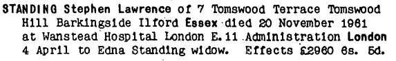
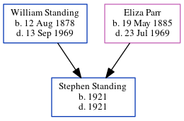

Stephen Lawrence Standing cMay 1923 - 1961
[ Home ] | [ Calendar ] | [ Surnames Index ] | [ Errors ] | [ Family History ]The child of William Standing (a laundry man) and Eliza Parr, Stephen Standing, the fourth cousin once-removed on the father's side of Nigel Horne, was born in Romford, Essex, England c. May 19231,2,3,4. He married Edna Godfrey in Ilford, Essex, England around Nov 19456 (Oct/Nov/Dec). In 1961, he was living at 7 Tomswood Terrace, Barkingside, Essex5.
He died on 20 Nov 1961 at King George Hospital, Ilford, London, England2,4,5.
Parents
- William Ernest was born on 12 Aug 1878
- Eliza Mary was born on 19 May 1885
Citations
- England & Wales births 1837-2006 - Findmypast
- England & Wales deaths 1837-2007 - Findmypast
- England & Wales, Birth Index: 1916-2005 Online publication - Provo, UT, USA: The Generations Network, Inc., 2008.Original data - General Register Office. England and Wales Civil Registration Indexes. London, England: General Register Office. © Crown copyright. Published by permission of the Cont
- England & Wales, Death Index: 1984-2005 Online publication - Provo, UT, USA: The Generations Network, Inc., 2007.Original data - General Register Office. England and Wales Civil Registration Indexes. London, England: General Register Office. © Crown copyright. Published by permission of the Cont
- England & Wales Government Probate Death Index 1960-2019 - Findmypast
- England & Wales, Marriage Index: 1916-2005 Online publication - Provo, UT, USA: The Generations Network, Inc., 2009.Original data - General Register Office. England and Wales Civil Registration Indexes. London, England: General Register Office. © Crown copyright. Published by permission of the Cont
Media
Stephen Lawrence - probate

England & Wales deaths 1837-2007 Transcription - BMD-D-1961-4-AZ-001045-119
England & Wales births 1837-2006 Transcription - BMD-B-1923-2-AZ-001331-083
England & Wales marriages 1837-2008 Transcription - BMD-M-1945-4-AZ-001390-010
England & Wales Government Probate Death Index 1960-2019 - GBOR/GOVPROBATE/A/1960-1962/00476706
Family Tree
Map
Generated by ged2site. Last updated on Jul 3, 2024
Known Issues
Parent William is listed in the residence for 1925, but this child is not
1939 UK register information missing